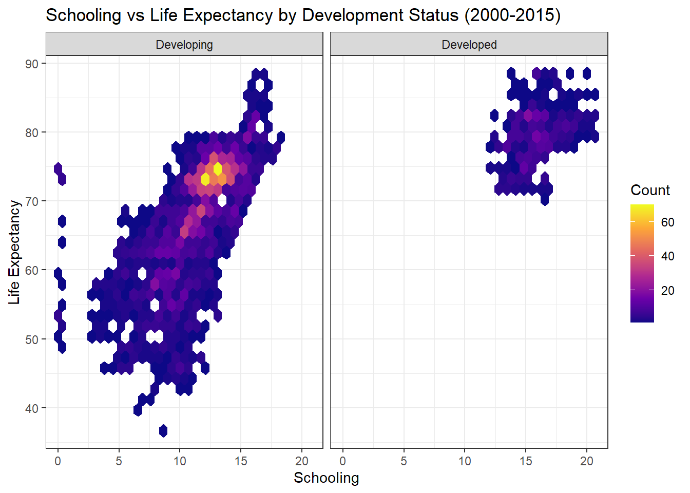

library(ggplot2)
library(tidyverse)
library(hexbin)
# read in data
meta_data <- read.csv("meta_data.csv")
# create hexagram plot
meta_data |>
mutate(Status = factor(Status, levels = c("Developing", "Developed"))) |>
filter(!is.na(Status)) |>
ggplot(aes(x = Schooling, y = Life.expectancy)) +
geom_hex() +
facet_wrap(~ Status) +
scale_fill_viridis_c(option = "C") +
labs(title = "Schooling vs Life Expectancy by Development Status (2000-2015)",
x = "Schooling",
y = "Life Expectancy",
fill = "Count") +
theme_bw()